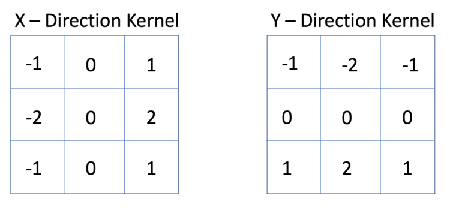
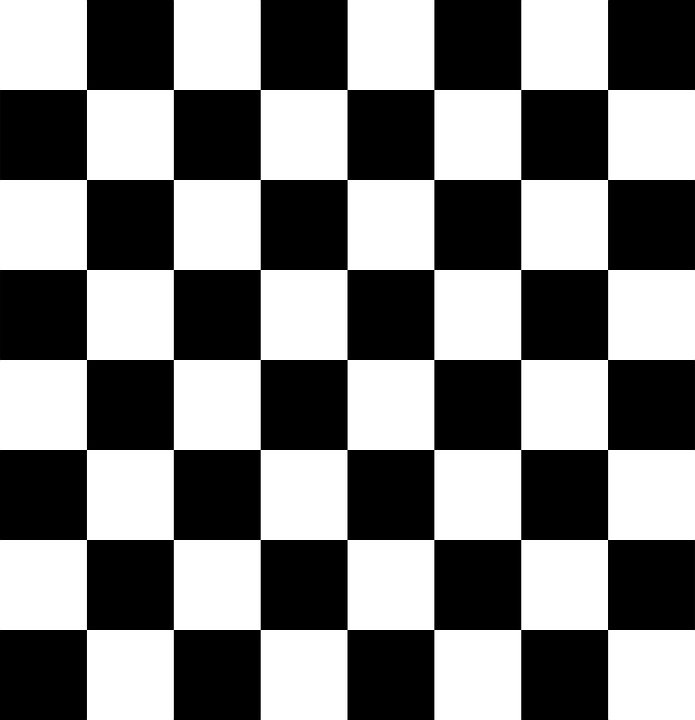
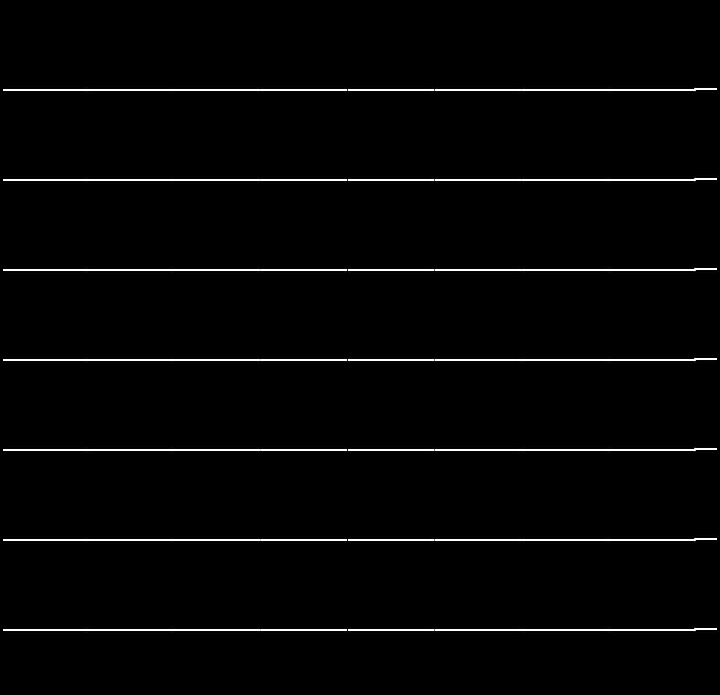
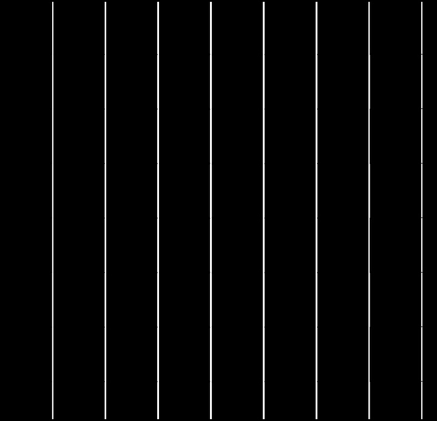
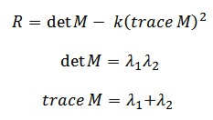
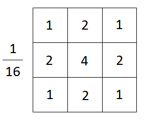
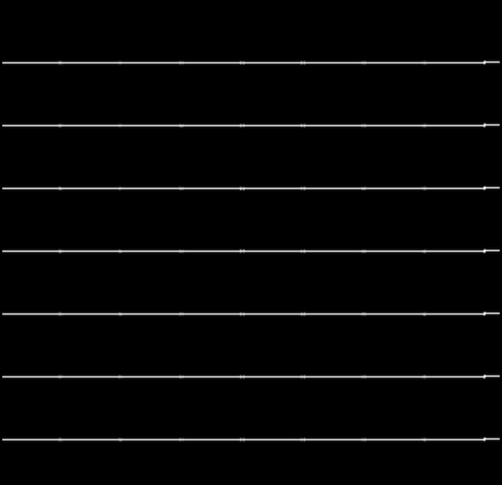
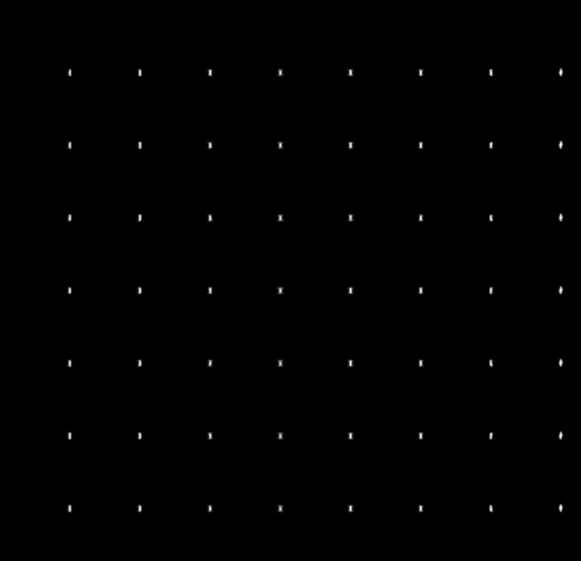
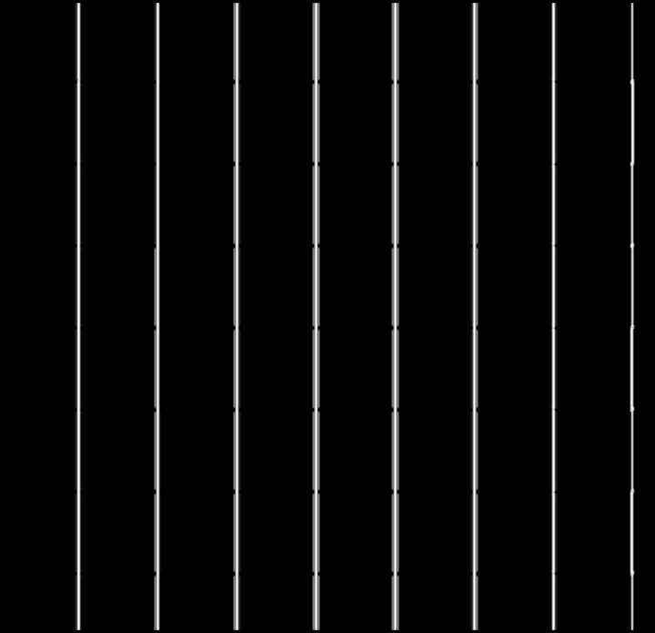

Implementing the Harris Corner Detector
As an introduction to OpenCV and using it with modern C++, I decided to code a Harris corner detector. I'd previously only used MexOpenCV so this was new to me. I'm 100% certain that this could've been done more efficiently but I think that I should prioritize moving on to new material rather than perfecting this. Quality vs quantity. This was also my first introduction to makefiles and gdb, but I’ll include that elsewhere.
My main problem when coding this was that I kept mixing up types for cv::Mat. This website was so incredibly helpful for me. I can't even begin to explain how many errors I had where it was simply because I was mixing up Mat types. I'm not certain why the compiler doesn't throw an error when this happens, but I might switch to a different one. I also found the at function strange in OpenCV, as in image.at
These are the general steps of the Harris Corner Detector
1. Take the grayscale of an image
2. Apply the Sobel operator to find the gradient values at each pixel
3. Compute the gradient covariance matrix elements
4. Apply gaussian blur to the covariance matrix elements
5. Calculate Harris score
6. Threshold and apply non maximum suppression
I've seen sources apply Gaussian blur to the image after step 1 as well.
I wanted to learn this from a sort of first principles approach, so I started with coding a Sobel operator. This is a method of finding the x and y gradients at every pixel of an image. Functionally, this detects edges in an image, which is useful because corners are the intersection of edges. How it works is you take a specific kernel (matrix) and multiply element wise with a 3x3 patch of the image.

Sobel operator kernel
My implementation iterates over each pixel in the image. I hardcoded the kernel, as opposed to creating a Mat, simply because it seemed simpler. I created two temp Mats of int type to store the output. This was necessary because the output of multiplication like this would've overflowed uchar. At the end I cast and scale the temporary Mat data to be back to uchar for consistency. You can see the results of running on a chessboard image below.

The original image

X Gradient

Y Gradient
I then needed to calculate the gradient covariance matrix, which is this

If you remember that the Sobel operator calculates the x and y gradients at each pixel, this is just going to be iterating over each pixel in the gx and gy Mats and multiplying as required. I used the mul function, which does element wise multiplication.
This was one tricky part for me. I had gotten to the part where I had to calculate the Harris score, which is determined by the equation below.

I had a problem though. Wouldn't the determinant of M always be 0? What needs to happen before I do the Harris score calculation is I need to apply a window function to M.
For this I chose a Gaussian blur with radius of 2. Gaussian blur is simply applying a 3x3 kernel to a 3x3 image patch again, similar to the Sobel operator. At the end you multiply by the inverse of the sum of the matrix elements, to compute an average.

I tried to do something a little strange here. Rather than hardcoding the values of the Gaussian kernel, I created a loop to fill the values in for me. If I had to do this next time, I would probably hardcode the values in a Mat, then use the mul function. I don't think I would actually precalculate the values from the Gaussian function, since it's not too difficult to just hardcode.

Blurred XX Gradient

Blurred XY Gradient

Blurred YY Gradient
Now we can calculate Harris score. I use k constant of 0.04 since that's what was recommended here. I then create a float Mat called window and fill it with the elements of the blurred gradient covariance matrix. Again, its type float to avoid overflow when calculating trace and determinant. I then threshold based on an empirically determined value (I chose it based on when I was getting a reasonable number of corners). It’s important to note that both very negative and very positive values are what you're looking for. I then put the absolute value of the score into a Mat. I was considering using a std::vector
I then ran a quick and not very good form of non maximum suppression. The idea is to find the best corner in an area, and then suppress (ignore) all the others. I iterated over the corners Mat with a 40x40 window and placed the point with the highest score into a std::vector
I then put all of my corners onto the color image for easy viewing. I seem to have issues with not detecting the corners perfectly on center, as well as the previously mentioned non max suppression problem. This OpenCV tutorial details how sub pixel accuracy can be achieved.